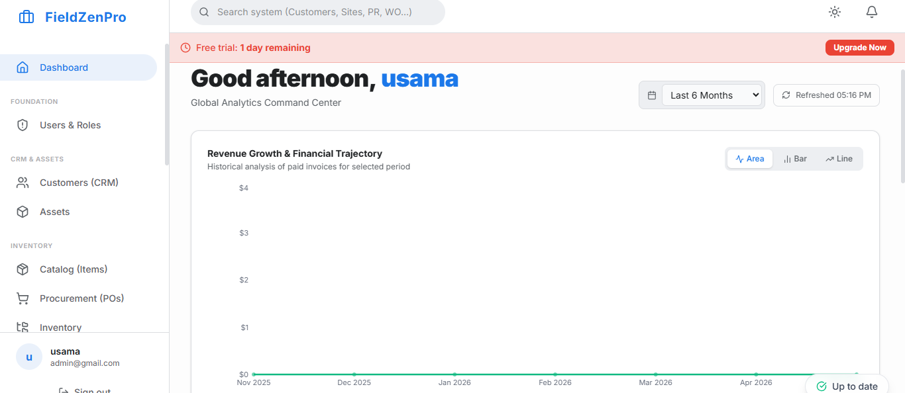

For many field service businesses, the software they use to manage their operations is a source of constant frustration. They bought an FSM software platform five or ten years ago when it was considered state-of-the-art. Today, that same software feels sluggish, looks dated, requires constant workarounds, and fails to integrate with modern accounting and marketing tools.
The hesitation to upgrade is understandable. The perceived pain of migrating data, training staff on a new system, and enduring operational disruption often seems worse than the pain of sticking with a mediocre legacy system. But in 2026, the cost of that hesitation is higher than ever before.
This article explores why sticking with legacy FSM software is silently eroding your profit margins, and why modern cloud-based platforms have dramatically lowered the friction of upgrading.

When you use outdated FSM software, the financial impact isn't always obvious on your P&L statement. It hides in inefficiencies and lost opportunities:
Legacy software often doesn't play nicely with modern tools. If your dispatcher has to look at your FSM software to see a completed job, then turn to a different screen to manually enter that invoice into QuickBooks, you have a "swivel chair" integration. This manual data entry introduces errors, slows down cash flow, and wastes hours of administrative time every week.
Software designed for desktop screens and later "ported" to mobile devices always creates a terrible experience for field technicians. Tiny buttons, complex navigation, and a requirement for constant internet connectivity lead to technicians abandoning the app. When technicians go back to paper, your data visibility drops to zero.
"Your FSM software should be a tailwind that accelerates your operations, not a headwind that your team has to constantly fight against just to get through the day."
Modern FSM software uses triggers and workflows to automate repetitive tasks: sending a text reminder 24 hours before a job, emailing an invoice immediately upon completion, or flagging a manager when a quote is over a certain dollar amount. Legacy systems require humans to remember to do these things, which means they frequently get forgotten.
If you are evaluating whether to upgrade, here is what the modern standard for FSM software looks like today:
The biggest barrier to upgrading FSM software is the fear of the migration process. Modern software vendors understand this and have invested heavily in building dedicated data import tools and guided onboarding workflows. What used to be a six-month, IT-heavy implementation can now often be accomplished in a matter of weeks by an operations manager.
By exporting your customer list, price book, and equipment data to CSV files, modern platforms can ingest your historical data and have you running test jobs on the new system the same day.
FieldZenPro was built on modern cloud architecture to deliver the speed, reliability, and integrations that legacy systems simply cannot provide. Don't let outdated software hold your business back any longer.
Muhammad Usama is the creator of FieldZenPro, a full-stack field service management platform built for small and medium service businesses. With hands-on experience building ERP systems on .NET and Azure, he writes about operational efficiency, technology adoption, and business growth strategies for field service companies.
See the difference a modern, cloud-native platform can make. Try FieldZenPro free for 14 days.
Start Your 14-Day Free Trial